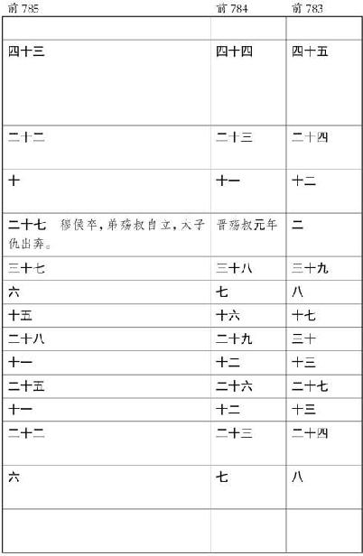

殷契 ，母曰简狄 ，有娀氏 之女，为帝喾 次妃。三人行浴，见玄鸟堕其卵，简狄 取吞之，因孕生契 。契 长而佐禹 治水有功。帝舜 乃命契 曰：“百姓不亲，五品不训，汝为司徒而敬敷五教，五教在宽。”封于商 ，赐姓子氏 。契 兴于唐 、虞 、大禹 之际，功业著于百姓，百姓以平。
契
卒，子昭明
立。昭明
卒，子相土
立。相土
卒，子昌若
立。昌若
卒，子曹圉
立。曹圉
卒，子冥
立。冥
卒，子振
立。振
卒，子微
立。微
卒，子报丁
立。报丁
卒，子报乙
立。报乙
卒，子报丙
立。报丙
卒，子主壬
立。主壬
卒，子主癸
立。主癸
卒，子天乙
立，是为成汤
。
成汤 ，自契 至汤 八迁。汤 始居亳 ，从先王居，作帝诰 。
汤 征诸侯。葛伯 不祀，汤 始伐之。汤 曰：“予有言：人视水见形，视民知治不。”伊尹 曰：“明哉！言能听，道乃进。君国子民，为善者皆在王官。勉哉，勉哉！”汤 曰：“汝不能敬命，予大罚殛之，无有攸赦。”作汤征 。
伊尹 名阿衡 。阿衡 欲奸汤 而无由，乃为有莘氏 媵臣，负鼎俎，以滋味说汤 ，致于王道。或曰，伊尹 处士，汤 使人聘迎之，五反然后肯往从汤 ，言素王及九主之事。汤 举任以国政。伊尹 去汤 适夏 。既丑有夏 ，复归于亳 。入自北门，遇女鸠 、女房 ，作女鸠女房 。
汤 出，见野张网四面，祝曰：“自天下四方皆入吾网。”汤 曰：“嘻，尽之矣！”乃去其三面，祝曰：“欲左，左。欲右，右。不用命，乃入吾网。”诸侯闻之，曰：“汤 德至矣，及禽兽。”
当是时，夏桀 为虐政淫荒，而诸侯昆吾氏 为乱。汤 乃兴师率诸侯，伊尹 从汤 ，汤 自把钺以伐昆吾 ，遂伐桀 。汤 曰：“格女众庶，来，女悉听朕言。匪台小子敢行举乱，有夏 多罪，予维闻女众言，夏氏 有罪。予畏上帝，不敢不正。今夏 多罪，天命殛之。今女有众，女曰‘我君不恤我众，舍我啬事而割政’。女其曰‘有罪，其奈何’？夏王 率止众力，率夺夏国 。有众率怠不 和，曰‘是日何时丧？予与女皆亡’！夏 德若兹，今朕必往。尔尚及予一人致天之罚，予其大理女。女毋不信，朕不食言。女不从誓言，予则帑僇女，无有攸赦。”以告令师，作汤誓 。于是汤曰“吾甚武”，号曰武王 。
桀 败于有娀之虚 ，桀 奔于鸣条 ，夏 师败绩。汤 遂伐三㚇 ，俘厥宝玉，义伯 、仲伯 作典宝 。汤 既胜夏 ，欲迁其社，不可，作夏社 。伊尹 报。于是诸侯毕服，汤 乃践天子位，平定海内。
汤 归至于泰卷 陶，中  作诰。既绌夏 命，还亳 ，作汤诰 ：“维三月，王自至于东郊。告诸侯群后：‘毋不有功于民，勤力乃事。予乃大罚殛女，毋予怨。’曰：‘古禹 、皋陶 久劳于外，其有功乎民，民乃有安。东为江 ，北为济 ，西为河 ，南为淮 ，四渎已修，万民乃有居。后稷 降播，农殖百谷。三公咸有功于民，故后有立。昔蚩尤 与其大夫作乱百姓，帝乃弗予，有状。先王言不可不勉。’曰：‘不道，毋之在国，女毋我怨。’”以令诸侯。伊尹 作咸有一德 ，咎单 作明居 。
汤
乃改正朔，易服色，上白，朝会以昼。
汤 崩，太子太丁 未立而卒，于是乃立太丁 之弟外丙 ，是为帝外丙 。帝外丙 即位三年，崩，立外丙 之弟中壬 ，是为帝中壬 。帝中壬 即位四年，崩，伊尹 乃立太丁 之子太甲 。太甲 ，成汤 適长孙也，是为帝太甲 。帝太甲 元年，伊尹 作伊训 ，作肆命 ，作徂后 。
帝太甲 既立三年，不明，暴虐，不遵汤 法，乱德，于是伊尹 放之于桐宫 。三年，伊尹 摄行政当国，以朝诸侯。
帝太甲 居桐宫 三年，悔过自责，反善，于是伊尹 乃迎帝太甲 而授之政。帝太甲 修德，诸侯咸归殷 ，百姓以宁。伊尹 嘉之，乃作太甲训 三篇，褒帝太甲 ，称太宗 。
太宗 崩，子沃丁 立。帝沃丁 之时，伊尹 卒。既葬伊尹 于亳，咎单 遂训伊尹 事，作沃丁 。
沃丁 崩，弟太庚 立，是为帝太庚 。帝太庚 崩，子帝小甲 立。帝小甲 崩，弟雍己立 ，是为帝雍己 。殷 道衰，诸侯或不至。
帝雍己 崩，弟太戊 立，是为帝太戊 。帝太戊 立伊陟 为相。亳 有祥桑榖共生于朝，一暮大拱。帝太戊 惧，问伊陟 。伊陟 曰：“臣闻妖不胜德，帝之政其有阙与？帝其修德。”太戊 从之，而祥桑枯死而去。伊陟 赞言于巫咸 。巫咸 治王家有成，作咸艾 ，作太戊 。帝太戊 赞伊陟 于庙，言弗臣，伊陟 让，作原命 。殷 复兴，诸侯归之，故称中宗 。
中宗 崩，子帝中丁 立。帝中丁 迁于隞 。河亶甲 居相。祖乙 迁于邢 。帝中丁 崩，弟外壬 立，是为帝外壬 。仲丁 书阙不具。帝外壬 崩，弟河亶甲 立，是为帝河亶甲 。河亶甲 时，殷 复衰。
河亶甲 崩，子帝祖乙 立。帝祖乙 立，殷 复兴。巫贤 任职。
祖乙 崩，子帝祖辛 立。帝祖辛 崩，弟沃甲 立，是为帝沃甲 。帝沃甲 崩，立沃甲 兄祖辛 之子祖丁 ，是为帝祖丁 。帝祖丁 崩，立弟沃甲 之子南庚 ，是为帝南庚 。帝南庚 崩，立帝祖丁 之子阳甲 ，是为帝阳甲 。帝阳甲 之时，殷 衰。
自中丁 以来，废適而更立诸弟子，弟子或争相代立，比九世乱，于是诸侯莫朝。
帝阳甲 崩，弟盘庚 立，是为帝盘庚 。帝盘庚 之时，殷 已都河 北，盘庚 渡河 南，复居成汤 之故居，乃五迁，无定处。殷 民咨胥皆怨，不欲徙。盘庚 乃告谕诸侯大臣曰：“昔高后成汤 与尔之先祖俱定天下，法则可修。舍而弗勉，何以成德！”乃遂涉河 南，治亳 ，行汤 之政，然后百姓由宁，殷 道复兴。诸侯来朝，以其遵成汤 之德也。
帝盘庚 崩，弟小辛 立，是为帝小辛 。帝小辛 立，殷 复衰。百姓思盘庚 ，乃作盘庚 三篇。帝小辛 崩，弟小乙 立，是为帝小乙 。
帝小乙 崩，子帝武丁 立。帝武丁 即位，思复兴殷 ，而未得其佐。三年不言，政事决定于冢宰，以观国风。武丁 夜梦得圣人，名曰说 。以梦所见视群臣百吏，皆非也。于是乃使百工营求之野，得说 于傅险 中。是时说 为胥靡，筑于傅险 。见于武丁 ，武丁 曰是也。得而与之语，果圣人，举以为相，殷 国大治。故遂以傅险 姓之，号曰傅说 。
帝武丁 祭成汤 ，明日，有飞雉登鼎耳而呴，武丁 惧。祖己 曰：“王勿忧，先修政事。”祖己 乃训王曰：“唯天监下典厥义，降年有永有不永，非天夭民，中绝其命。民有不若德，不听罪，天既附命正厥德，乃曰其奈何。呜呼！王嗣敬民，罔非天继，常祀毋礼于弃道。”武丁 修政行德，天下咸欢，殷 道复兴。
帝武丁 崩，子帝祖庚 立。祖己 嘉武丁 之以祥雉为德，立其庙为高宗 ，遂作高宗肜日 及训 。
帝祖庚 崩，弟祖甲 立，是为帝甲 。帝甲 淫乱，殷 复衰。
帝甲 崩，子帝廪辛 立。帝廪辛 崩，弟庚丁 立，是为帝庚丁 。帝庚丁 崩，子帝武乙 立。殷 复去亳 ，徙河 北。
帝武乙 无道，为偶人，谓之天神。与之博，令人为行。天神不胜，乃僇 辱之。为革囊，盛血，卬而射之，命曰“射天”。武乙 猎于河渭 之间，暴雷，武乙 震死。子帝太丁 立。帝太丁 崩，子帝乙 立。帝乙 立，殷 益衰。
帝乙 长子曰微子启 ，启 母贱，不得嗣。少子辛 ，辛 母正后，辛 为嗣。帝乙 崩，子辛 立，是为帝辛 ，天下谓之纣 。
帝纣 资辨捷疾，闻见甚敏；材力过人，手格猛兽；知足以距谏，言足以饰非；矜人臣以能，高天下以声，以为皆出己之下。好酒淫乐，嬖于妇人。爱妲己 ，妲己 之言是从。于是使师涓 作新淫声，北里之舞，靡靡之乐。厚赋税以实鹿台 之钱，而盈钜桥 之粟。益收狗马奇物，充仞宫室。益广沙丘 苑台，多取野兽蜚鸟置其中。慢于鬼神。大冣乐戏于沙丘 ，以酒为池，县肉为林，使男女倮相逐其间，为长夜之饮。
百姓怨望而诸侯有畔者，于是纣 乃重刑辟，有炮格之法。以西伯昌 、九侯 、鄂侯 为三公。九侯 有好女，入之纣 。九侯 女不憙淫，纣 怒，杀之，而醢九侯 。鄂侯 争之强，辨之疾，并脯鄂侯 。西伯昌 闻之，窃叹。崇侯虎 知之，以告纣 ，纣 囚西伯羑里 。西伯 之臣闳夭 之徒，求美女奇物善马以献纣 ，纣 乃赦西伯 。西伯 出而献洛西之地，以请除炮格之刑。纣 乃许之，赐弓矢斧钺，使得征伐，为西伯 。而用费中 为政。费中 善谀，好利，殷 人弗亲。纣 又用恶来 。恶来 善毁谗，诸侯以此益疏。
西伯 归，乃阴修德行善，诸侯多叛纣 而往归西伯 。西伯 滋大，纣 由是稍失权重。王子比干 谏，弗听。商容 贤者，百姓爱之，纣 废之。及西伯 伐饥国 ，灭之，纣 之臣祖伊 闻之而咎周 ，恐，奔告纣 曰：“天既讫我殷 命，假人元龟，无敢知吉，非先王不相我后人，维王淫虐用自绝，故天弃我，不有安食，不虞知天性，不迪率典。今我民罔不欲丧，曰‘天曷不降威，大命胡不至’？今王其奈何？”纣 曰：“我生不有命在天乎！”祖伊 反，曰：“纣 不可谏矣。”西伯 既卒，周武王 之东伐，至盟津 ，诸侯叛殷 会周 者八百。诸侯皆曰：“纣 可伐矣。”武王 曰：“尔未知天命。”乃复归。
纣 愈淫乱不止。微子 数谏不听，乃与大师、少师谋，遂去。比干 曰：“为人臣者，不得不以死争。”乃强谏纣 。纣 怒曰：“吾闻圣人心有七窍。”剖比干 ，观其心。箕子 惧，乃详狂为奴，纣 又囚之。殷 之大师、少师乃持其祭乐器奔周 。周武王 于是遂率诸侯伐纣 。纣 亦发兵距之牧野 。甲子日，纣 兵败。纣 走，入登鹿台 ，衣其宝玉衣，赴火而死。周武王 遂斩纣 头，县之大白旗。杀妲己 。释箕子 之囚，封比干 之墓，表商容 之闾。封纣 子武庚禄父 ，以续殷 祀，令修行盘庚 之政。殷 民大说。于是周武王 为天子。其后世贬帝号，号为王。而封殷 后为诸侯，属周 。
周武王
崩，武庚
与管叔
、蔡叔
作乱，成王
命周公
诛之，而立微子
于宋
，以续殷
后焉。
太史公 曰：余以颂 次契 之事，自成汤 以来，采于书诗 。契 为子姓 ，其后分封，以国为姓，有殷氏 、来氏 、宋氏 、空桐氏 、稚氏 、北殷氏 、目夷氏 。孔子 曰，殷 路车为善，而色尚白。